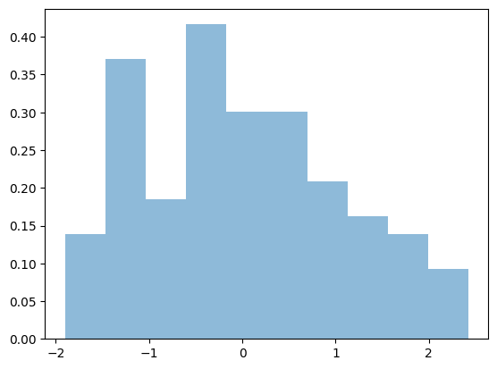

MD simulations of fluids#
Initial positions, velocities and forces#
Unlike MC simulation where the initial condition is fully specified by positin arrray in MD simulations we must also specify initial velocities which allows us to determine initial forces!
import numpy as np
from itertools import product
import matplotlib.pyplot as plt
def IC_pos(rho=0.88, N_cell=3):
"""
Create a lattice of Lennard-Jones particles initially placed in a cubic FCC lattice.
Parameters:
rho (float, optional): Number density of particles. Defaults to 0.88.
N_cell (int, optional): Number of unit cells in one direction. Defaults to 3.
Returns:
np.array: Array of particle positions.
float: Length of the simulation box.
int: Total number of particles.
"""
from itertools import product
N = 4 * N_cell ** 3 # Total number of particles in the system
L = (N / rho) ** (1 / 3) # Length of the simulation box
L_cell = L / N_cell # Length of a unit cell
# Generate positions within the unit cell
base_positions = np.array([[0, 0, 0],
[0, 0.5, 0.5],
[0.5, 0, 0.5],
[0.5, 0.5, 0]])
# Create lattice by translating the base positions
pos = np.array([base + np.array([x, y, z]) for x, y, z in product(range(N_cell), repeat=3)
for base in base_positions])
# Scale positions to the size of the unit cell
pos *= L_cell
return pos, L, N
def IC_vel(N):
'''Genreate initial distribution of velocities from Maxwell-Botlzmann'''
vel = np.random.randn(N, 3)
vel -= np.average(vel, axis=0)
return vel
def IC_F(N):
'''Generate force matrix objects to be used throughout simulation
---
F: (N, N, 3) array that contains all the forces between i, j particles in 3D
ind: arrays of size N and N. These are indices of upper triangular matrix e.g (i, j) such that i<j.
Having indices of all inter-particle forces allows us to avoid using for loops
'''
F = np.zeros((N, N, 3))
I, J = np.triu_indices(N, k=1)
return F, I, J
Inspect initial positions, forces and velocities#
pos, L_box, N = IC_pos(rho=0.88, N_cell=3)
plt.scatter(pos[:, 0], pos[:,1])
<matplotlib.collections.PathCollection at 0x7f920bfe58e0>
F, I, J = IC_F(5)
print(F.shape)
print(I)
print(J)
(5, 5, 3)
[0 0 0 0 1 1 1 2 2 3]
[1 2 3 4 2 3 4 3 4 4]
vel = IC_vel(100)
plt.hist(vel[:,0], alpha=0.5, density=True);

Computation of forces#
Most of the computational heavy lifting in MD simulations goes into evaluation of forces.
As the number of particles goes so does the need to evaluate the number of interacting pairs
In realistic simulations neighbor lists and cutoff distances are used to minimize and keep track of smaller number of particle pairs
def force_update(pos):
'''This function is used to update the force matrix F which has been created via IC_F function earlier
pos: (N, 3) position array is specified as input
returns
---
forces:
U: potential energy
P: pressure
hist: histogram of r^2 distances
'''
# Compute all unique ij distances
r_vec = pos[I] - pos[J]
# Use min image criteria for distances
r_vec = (r_vec + L_box/2) % L_box - L_box/2
# Compute r^2
r_sq = np.sum(r_vec**2, axis=1)
# Compute forces
dUdr = -(48 / r_sq ** 7 - 24 / r_sq ** 4)
# Compute force maxtirx containing all forces between ij particles dU/dr * dr
F[I,J] = dUdr[:, np.newaxis] * r_vec
# Compute total force acting on each particle (i=1,...N)
forces = F.sum(axis=0) - F.sum(axis=1)
# Compute potential energy, pressure and histogram of r^2 pair distances
U = np.sum(4 / r_sq ** 6 - 4 / r_sq ** 3)
P = np.sum(F[I,J] * r_vec)
hist = np.histogram(r_sq, bins=30, range=(0, L_box / 2))[0]
return forces, U, P, hist
Time stepping#
def time_step(pos, vel, F, dt=0.01):
'''Update velocities, positions and forces after dt time step of integration'''
vel += 0.5 * F * dt
pos = np.mod(pos + vel * dt, L_box)
F, pot, P, hist = force_update(pos)
vel += 0.5 * F * dt
kin = 0.5 * np.sum(vel**2)
return pos, vel, F, pot, kin, P, hist
MD simulation loop#
def simulate(pos,
vel,
T=1,
freq_out=50,
nsteps=10000):
'''Main MD simulation loop. All of the variables and force matrix must be initialized
so that functions can acess them'''
kins, pots, Ps, hists = [], [], [], []
F = force_update(pos)[0]
for t in range(nsteps):
# Update positions, velocities, forces
pos, vel, F, pot, kin, P, hist = time_step(pos, vel, F)
# Scaling velocitites to keep T constant
vel *= np.sqrt(N * 3 * T / (2 * kin))
# Save thermo output
if t % freq_out == 0:
kins.append(kin)
pots.append(pot)
Ps.append(P)
hists.append(hist)
return np.array(kins), np.array(pots), np.array(Ps), np.mean(hists, axis=0)
Running MD simulation#
Note that variables pos, L_box, F, I, J, vel are global variables which are used and updated by simulate function.
Therefore we collect all the relevant parameters of simulation in once cell to make it easy to do various exploratons.
#------- Initalize global variables: positions, box length, velocities and Forces-------
pos, L_box, N = IC_pos(rho=0.88, N_cell=3)
vel = IC_vel(N)
F, I, J = IC_F(N)
#Run simulation
kins, pots, Ps, hist = simulate(pos, vel, T=1, freq_out=50, nsteps=10000)
Analysis of MD simulation#
plt.plot(kins, label='KE')
plt.plot(pots, label='PE')
plt.xlabel('Time')
plt.ylabel('Energy')
plt.legend()
<matplotlib.legend.Legend at 0x7f9208ffcf10>
rho=0.88
r = np.linspace(0, L_box / 2, 30)
pair_correlation = hist / (4 * np.pi * rho * r)
plt.plot(r, pair_correlation, '-o')
plt.xlabel(r'$r$')
plt.ylabel(r'$g(r)$')
/tmp/ipykernel_2482/971943631.py:3: RuntimeWarning: invalid value encountered in divide
pair_correlation = hist / (4 * np.pi * rho * r)
Text(0, 0.5, '$g(r)$')